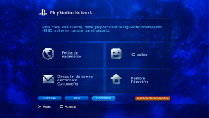

PlayStation™Network > Inscripción
Inscripción
Para utilizar esta función, debe mantener siempre el software del sistema actualizado con la versión más reciente.
PSNSM es el servicio online utilizado para realizar compras online a través de  (PlayStation®Store), participar en chats en
(PlayStation®Store), participar en chats en  (Amigos) o utilizar varios servicios online de PSNSM. Para utilizar PSNSM, debe tener una cuenta de Sony Entertainment Network. Para crear una cuenta, seleccione
(Amigos) o utilizar varios servicios online de PSNSM. Para utilizar PSNSM, debe tener una cuenta de Sony Entertainment Network. Para crear una cuenta, seleccione  (Inscribirse) en
(Inscribirse) en  (PlayStation™Network) y, a continuación, siga las instrucciones de la pantalla.
(PlayStation™Network) y, a continuación, siga las instrucciones de la pantalla.

Requisitos principales para la creación de una cuenta
| Datos personales | Introduzca información del usuario registrado, incluido el día, el mes y el año de nacimiento, así como el nombre de usuario y la dirección. |
|---|---|
| Cuenta principal / subcuenta | Hay dos tipos de cuentas: las principales y las subcuentas. Los titulares de las cuentas principales pueden establecer determinadas condiciones de uso de subcuentas asociadas. Cuenta principal: Los usuarios registrados con una edad determinada o superior podrán crear una cuenta estándar. Los titulares de las cuentas principales pueden establecer determinadas condiciones de uso de subcuentas asociadas. Subcuenta: Los usuarios que no cumplen los requisitos para disponer de una cuenta principal en su región únicamente podrán utilizar una subcuenta. Los titulares de subcuentas no pueden crear monederos, aunque sí hacer uso del monedero de la cuenta principal asociada para pagar productos y servicios. No es posible crear una subcuenta si no existe una cuenta principal asociada. Los requisitos de aptitud de las cuentas principales y las subcuentas pueden variar en función del país o región de residencia. Para obtener más información, visite el sitio web de SIE de su región. |
| ID de inicio de sesión (dirección de correo electrónico) | Registre el ID que desea utilizar para iniciar sesión en PSNSM. Utilice una dirección de correo electrónico válida para recibir los mensajes de confirmación como, por ejemplo, en caso de realizar una compra en (PlayStation®Store). |
| Contraseña |
Siga las normas siguientes para crear una contraseña:
|
| ID online |
Registre el nombre que desea que aparezca en PSNSM. Una vez creado el ID online, no podrá modificarse. Siga las instrucciones indicadas a continuación para crear su ID online:
|
Notas
- Para crear una subcuenta, visita el siguiente sitio web:
https://www.playstation.com/acct/family - En función de la edad del menor, es necesario crear la subcuenta mediante un ordenador. Durante el proceso de creación de la cuenta, se envía un mensaje de correo electrónico a la dirección asociada con el ID de inicio de sesión del titular de la cuenta principal. Siga las instrucciones de dicho mensaje para completar el registro en un ordenador.
- Para iniciar sesión en PSNSM con la subcuenta creada, deberá asociar la cuenta al usuario que accederá al sistema PS3™. Consulte [Utilización de una cuenta existente] en (PlayStation™Network) en esta guía.
- Su ID de inicio de sesión (dirección de correo electrónico) y contraseña no se mostrarán públicamente. No comparta esta información con otros usuarios.
- Sólo es posible crear una cuenta por usuario en el sistema PS3™. Para crear cuentas adicionales, diríjase a
 (Usuarios) y cree usuarios adicionales.
(Usuarios) y cree usuarios adicionales. - Para obtener más información acerca del tratamiento de los datos personales de los usuarios, consulte el sitio Web de SIE de su región.
- Para acceder a PSNSM, es necesario disponer de conexión a Internet de banda ancha. Tenga en cuenta que no se admite la conectividad mediante acceso telefónico.
- PSNSM sólo se encuentra disponible en determinados países e idiomas. Para obtener más información, póngase en contacto con el servicio de atención al cliente de su región.
- (Inscribirse) se visualiza solo si no se ha creado una cuenta.